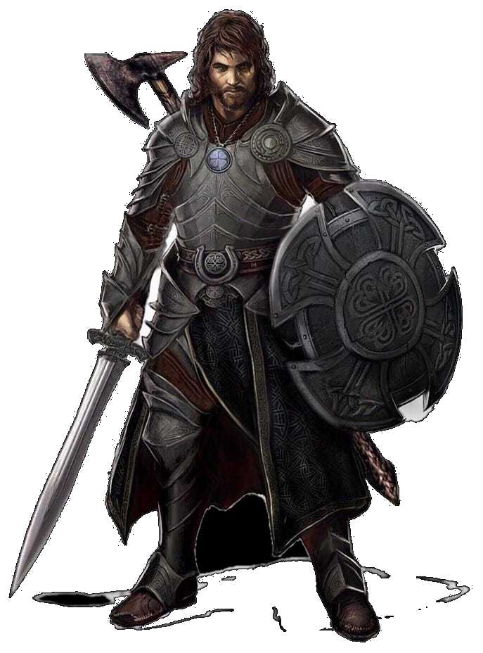

Escolha o seu personagem
Geralt
Geralt, nascido em Resília. Perdeu sua família para um mestre de magia negra chamado Java quando tinha 10 anos. Ao atingir a maioridade, Geralt se tornou um guerreiro de Resília e só pensa em se vingar.
Harold
nascido em um pequeno vilarejo ao norte de Resília. Nasceu com o dom da magia, porém o seu vilarejo não abriga ninguém capaz de ensiná-lo controlar sua magia, por isso Harold aspira se mudar para a cidade e trabalhar para conseguir um professor que possa ajudá-lo.
Scarlet

Apesar de ter nascido de pais humanos, Scarlet é uma bruxa muito poderosa e atualmente está refugiada em Resília com o objetivo de formar uma sociedade.